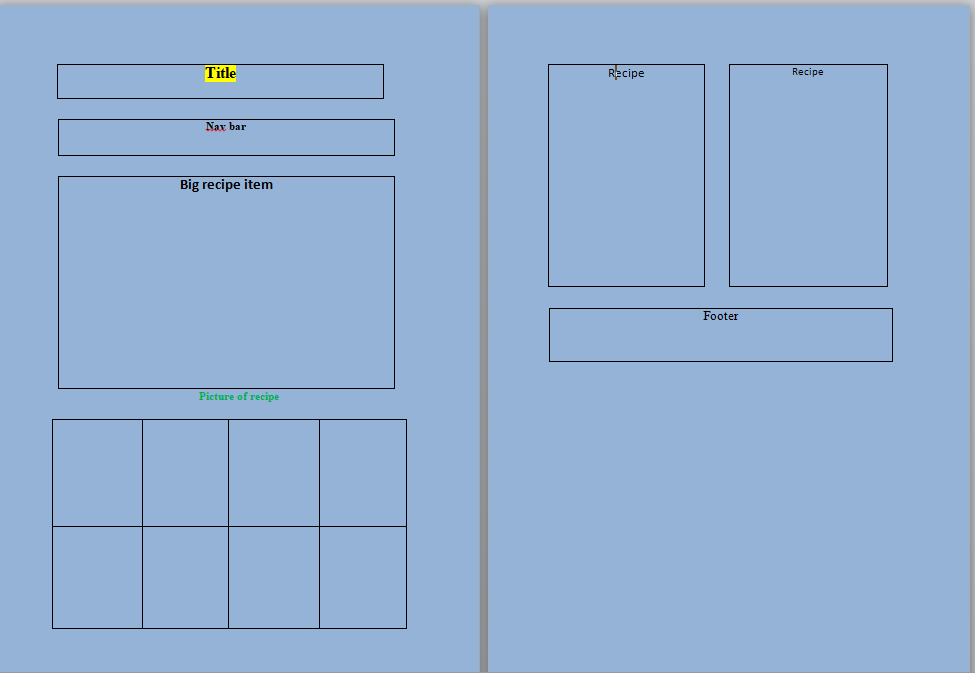

Site Name:
Cooking Recipes The site name "Cooking Recipes" was chosen to clearly communicate the purpose and content of the website. It is a simple and descriptive name that aligns with the target audience's needs and interests.
Site Purpose
The Cooking Recipes website aims to provide a comprehensive resource for home cooks and food enthusiasts. The site will offer a wide variety of easy-to-follow recipes across different cuisines and dietary preferences. Users will be able to search for recipes, save their favorites, and even submit their own recipes to share with the community
Scenarios
What are some healthy and delicious dinner ideas for a family of four?
I have a bunch of leftover ingredients in my fridge. Can I find recipes
that use those specific ingredients?.How do I submit my own recipe to
be featured on the website?
Color Schema
The color schema for the Cooking Recipes website will utilize a combination of warm, earthy tones to create a cozy and inviting atmosphere. The primary colors are:
- Main Heading and Buttons: #8C6B46 (Warm Brown)
- Navigation and Footer: #333333 (Dark Gray)
- Body Text: #4A4A4A (Charcoal Gray)
- Accent Color: #F1C40F (Sunny Yellow)
Typography
The typography for the Cooking Recipes website will feature the following font selections:
1. Headings (H1-H3): "Merriweather", serif
- This classic serif font conveys a sense of tradition and culinary expertise.
2. Body Text: "Lato", sans-serif
- The clean and modern sans-serif font ensures easy readability for the recipe content.
3. Buttons and Calls-to-Action: "Montserrat", sans-serif
- The slightly bolder Montserrat font is used to make the interactive elements stand out.
Desktop View Wireframe
wireframe for mobile, is a strieght line, it displace like this hotizontal because of screenshot from laptop. All is vertical line